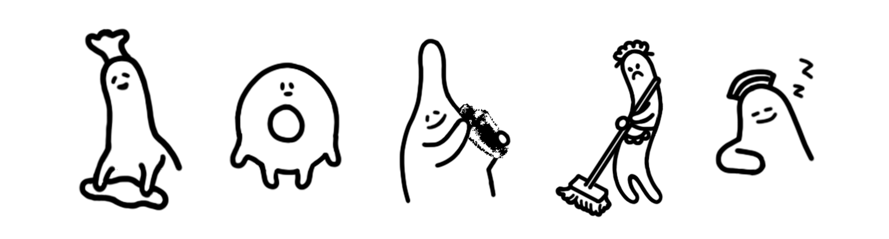
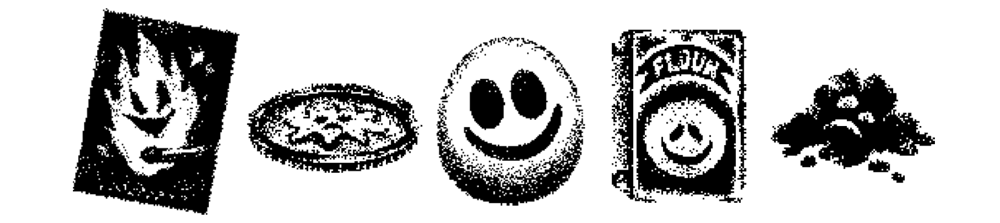
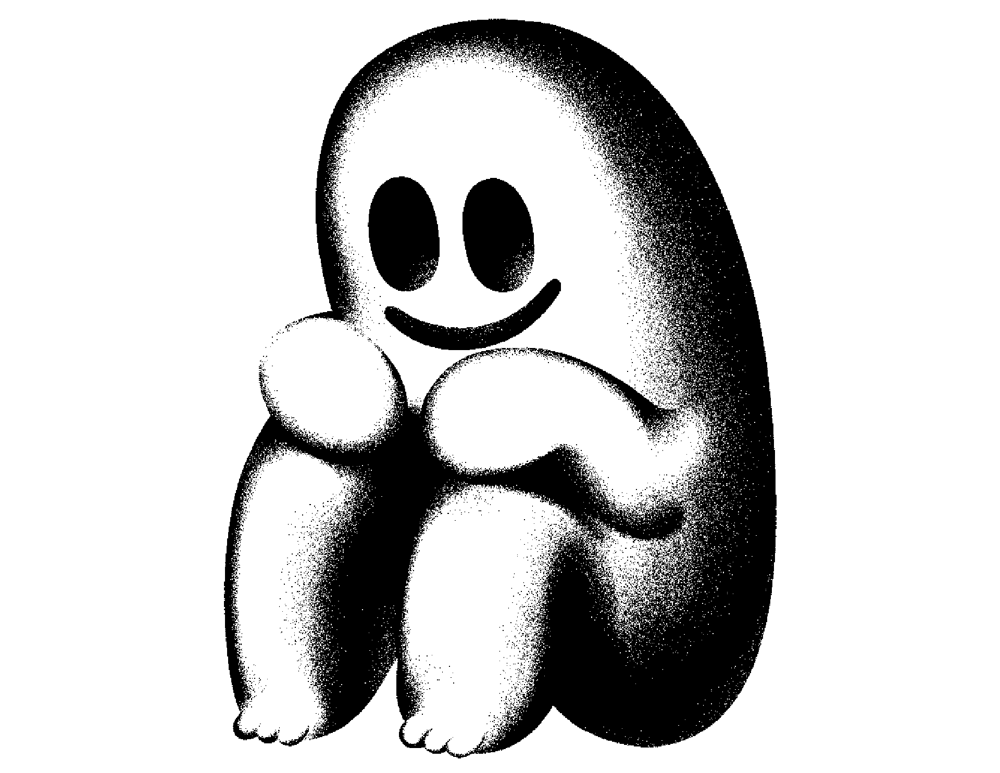

1편에서도 언급했듯이, <호텔 소울즈>를 만들면서 제가 가장 즐거웠던 순간은 역시 <호텔 소울즈>의 캐릭터들을 그릴 때였습니다.
기묘한 호텔 안의 직원들은 전부 뚜렷한 성별도, 형체도 없이 유령처럼 호텔 안에 머물러 있습니다.
이상한 기준을 가지고 이상한 말을 해서 일반적인 호텔의 직원들과 다르다는 느낌을 주기도 하죠.
인간보다는 모호한 덩어리같은 이 호텔 직원들을 그리는 것이 저는 가장 즐거웠습니다.


호텔 안의 모호한 생사의 경계에 부합하듯이 몇몇 오브젝트들에도 캐릭터처럼 표정이 있기도 합니다. 마찬가지로 그리기 즐거웠어요.

이런 호텔 소울즈의 기묘한 캐릭터들 중 가장 상징적인 캐릭터가 바로 ‘그것’입니다.
‘그것’은 호텔의 깊은 지하에 앉아 있는 거대한 무언가로 마지막까지 정체가 완전히 설명되지도 않는 존재지요.
호텔 직원들은 ‘그것’을 좋아하고 숭배하지만 그들도 ‘그것’이 정확히 무엇인지 모르는 것은 마찬가지입니다.
우리의 주인공조차 처음 마주친 거대한 ‘그것’을 보고 ‘그것’이 뭔지 이해해볼 생각도 없이 두려워하며 도망칩니다. 개인적으로는 이 부분의 시퀀스를 굉장히 좋아합니다.
게임 내에서도 하이라이트 부분이고, ‘그것’이 건넨 인사를 이해하지 못한 주인공의 반응도 재미있죠.
그러나 주인공이 ‘그것’의 몸 속으로 진입한 이후에는 ‘그것’이 느낀 감정의 일부분을 읽는 것이 가능해집니다. 그리고 ‘그것’도 마찬가지로 지구라는 낯선 공간에 고립되어 두려움과 외로움을 느끼는, 어찌 보면 슬프고 불쌍한 존재라는 것을 알게 됩니다.
여담이지만 저는 ‘그것’을 그리면서 고야가 그린 <거인>을 생각했어요.
“이 희귀한 판화는 지구의 끝에 앉아 있는 신비로운 거인을 묘사하며 고야의 작품 중 가장 이상하고 오래 기억되는 이미지의 하나입니다.
가느다란 은색 초승달만 걸려 있는 밤하늘을 어깨너머로 보고 있는 이 고독한 괴물은 연민의 감정과 불안감을 동시에 불러일으킵니다.” - MetMuseum
마찬가지로 <호텔 소울즈>의 캐릭터들을 통해서도 정체를 알 수 없어서 오는 두려움과 무서움,
그러나 사실은 모두가 똑같이 운명에서 자유롭지 못한 존재라는 연민을 동시에 느낄 수 있지 않을까 생각합니다. <호텔 소울즈>를 플레이해주신 많은 분들이 느껴주셨길 바라요.